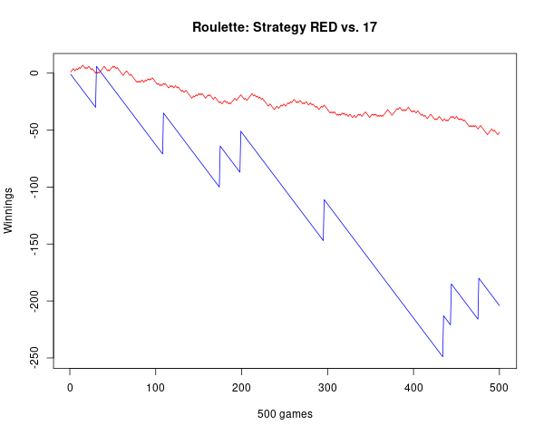
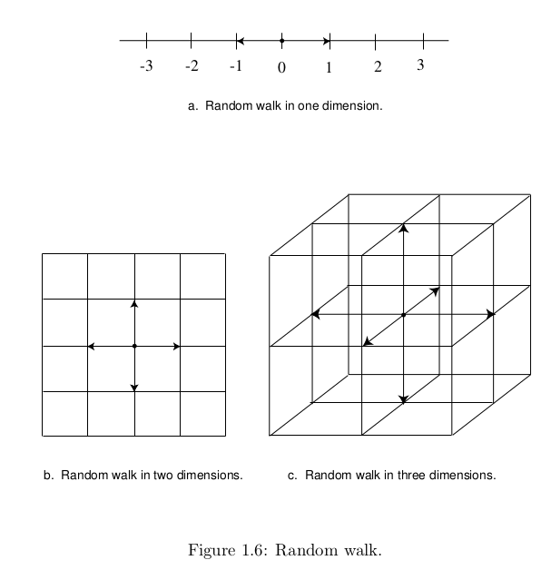

Chapter 1 - Discrete Probability Distributions
1.1 Simulation of Discrete Probabilities
| Main: | Index |
| Previous: | Index |
| Next: | 1.2 Discrete Probability Distributions |
Exercise 1
Modify the program CoinTosses to toss a coin n times and print out after every 100 tosses the proportion of heads minus 1/2. Do these numbers appear to approach 0 as n increases? Modify the program again to print out, every 100 times, both of the following quantities: the proportion of heads minus 1/2, and the number of heads minus half the number of tosses. Do these numbers appear to approach 0 as n increases?Answer
Simulated 100.000 coin tosses. The first case has a very clear trend towards 0. The second case converges to 0, just a bit more randomly.
Code:
# 01.01 - Exercise 1
cointToss <- function(nToss) {
# 1 symbolizes coin toss 'H'
tosses = sample(c(0,1), size=nToss, replace = TRUE)
return(tosses)
}
PropHeads <- function(tosses) {
propHeads = cumsum(tosses)
numberOfHundreds = floor(length(tosses)/100)
retVal = rep(0, numberOfHundreds)
for (k in 1:numberOfHundreds) {
print(propHeads[100*k]/length(tosses) - 0.5)
retVal[k] = propHeads[100*k]/length(tosses) - 0.5
}
return(retVal)
}
PropHeadsByTosses <- function(tosses) {
propHeads = cumsum(tosses)
numberOfHundreds = floor(length(tosses)/100)
retVal = rep(0, numberOfHundreds)
for (k in 1:numberOfHundreds) {
print(propHeads[100*k]/(100*k) - 0.5)
retVal[k] = propHeads[100*k]/(100*k) - 0.5
}
return(retVal)
}
# Simulating 100K tosses
numbeOfTosses = 100*1000
simulatedTosses = cointToss(numbeOfTosses)
t1 = PropHeads(simulatedTosses)
t2 = PropHeadsByTosses(simulatedTosses)
# Generate Plots
plot(1:length(t1), t1, type="l",
main="Heads by Total number of Tosses",
xlab="100 tosses", ylab="H - 0.5")
plot(1:length(t2), t2, type="l",
main="Heads by Number of Tosses",
xlab="100 tosses", ylab="H - 0.5")
# Save tosses
png(filename="~/GITHUB/CoveredInChocolate.github.io/IntroProb/img/01.01_Ex01_01.png", width = 600, height = 480)
plot(1:length(t1), t1, type="l",
main="Heads by Total number of Tosses",
xlab="100 tosses", ylab="H - 0.5")
dev.off()
png(filename="~/GITHUB/CoveredInChocolate.github.io/IntroProb/img/01.01_Ex01_02.png", width = 600, height = 480)
plot(1:length(t2), t2, type="l",
main="Heads by Number of Tosses",
xlab="100 tosses", ylab="H - 0.5")
dev.off()
Plots:


■
Exercise 2
Modify the program CoinTosses so that it tosses a coin n times and records whether or not the proportion of heads is within 0.1 of 0.5 (i.e., between 0.4 and .06). Have your program repeat this experiment 100 times. About how large must n be so that approximately 95 out of 100 times the proportion of heads is between 0.4 and 0.6?Answer
Based on repeated simulations, it seems like the proportion is consistently within 0.4 and 0.6 when $n = 100$, and maybe a little above, such as $n=110$ or $n=120$.
Code:
# 01.01 - Exercise 2
coinToss <- function(nToss) {
# 1 symbolizes coin toss 'H'
tosses = sample(c(0,1), size=nToss, replace = TRUE)
return(tosses)
}
# Select n
NSIM = 120
# Storing results
propVector = rep(0, 100)
# Repeat experiment 100 times:
for (k in 1:100) {
tosses = coinToss(NSIM)
propVector[k] = mean(tosses)
}
print(sum(propVector > 0.4 & propVector < 0.6)/length(propVector))
■
Exercise 3
In the early 1600s, Galileo was asked to explain the fact that, although the number of triples of integers from 1 to 6 with sum 9 is the same as the number of such triples with sum 10, when three dice are rolled, a 9 seemed to come up less often than a 10—supposedly in the experience of gamblers.(a) Write a program to simulate the roll of three dice a large number of times and keep track of the proportion of times that the sum is 9 and the proportion of times it is 10.
Answer
Code
# 01.01 - Exercise 3
NSIM = 1e6
# Simulating three dice tosses
d1 = sample(c(1:6), size=NSIM, replace = TRUE)
d2 = sample(c(1:6), size=NSIM, replace = TRUE)
d3 = sample(c(1:6), size=NSIM, replace = TRUE)
# Sum of tosses
sumDice = d1 + d2 + d3
# Number of 9s
sum(sumDice == 9)/NSIM
# Number of 10s
sum(sumDice == 10)/NSIM
Output
> # Number of 9s > sum(sumDice == 9)/NSIM [1] 0.115731 > # Number of 10s > sum(sumDice == 10)/NSIM [1] 0.124509Based on our simulations, it looks like 10 is in fact more frequent.
(b) Can you conclude from your simulations that the gamblers were correct?
Answer
The simulations can be repeated several times and the results are consistent, so we can make an empirical conclusion. But we can't make a formal conclusion unless we prove it; there is a very small chance that we are being fooled by the simulation. (And maybe it isn't even implemented correctly).
■
Exercise 4
In raquetball, a player continues to serve as long as she is winning; a point is scored only when a player is serving and wins the volley. The first player to win 21 points wins the game. Assume that you serve first and have a probability 0.6 of winning a volley when you serve and probability 0.5 when your opponent serves. Estimate, by simulation, the probability that you will win a game.Answer
Simulating 100.000 games. The player appears to win in around 82.5% of the games.
Code:
# 01.01 - Exercise 4 - Raquetball
winPoint = 0.4
winBackServe = 0.5
NGAMES = 100000
# Initializing vector of results
# 1: Player wins
# 0: Opponent wins
# -1: Default, empty value
resultsVector = rep(-1, NGAMES)
# Simulate game
simulateGame <- function(seededVals) {
pPoints = 0
oPoints = 0
serve = "p"
winner= -1
for (k in 1:length(seededVals)) {
if (serve == "p" & seededVals[k] >= winPoint) {
# Player wins point
pPoints = pPoints + 1
} else if (serve == "p" & seededVals[k] < winPoint) {
# Player loses serve
serve = "o"
} else if (serve == "o" & seededVals[k] >= winBackServe) {
# Opponent wins point
oPoints = oPoints + 1
} else if (serve == "o" & seededVals[k] < winBackServe) {
# Opponent loses serve
serve = "p"
}
if (pPoints == 21 | oPoints == 21) {
# Game finished - break for loop
# print("BREAK!")
# print(k)
break
}
}
if (pPoints == 21) winner = 1
if (oPoints == 21) winner = 0
return(winner)
}
# More efficient to vectorize, but code is easier to understand this way
for (g in 1:NGAMES) {
# Simulating 200 random uniform variables
simSeed = runif(200)
resultsVector[g] = simulateGame(simSeed)
}
WINRATE = sum(resultsVector)/length(resultsVector)
print(WINRATE)
Output
> print(WINRATE) [1] 0.82536
■
Exercise 5
Consider the bet that all three dice will turn up sixes at least once in n rolls of three dice. Calculate $f(n)$, the probability of at least one triple-six when three dice are rolled n times. Determine the smallest value of n necessary for a favorable bet that a triple-six will occur when three dice are rolled n times. (DeMoivre would say it should be about 216 log 2 = 149.7 and so would answer 150 — see Exercise 1.2.17. Do you agree with him?)Answer
According to the simulations performed, it seems that the proportion of simulations where the first triple six occurs within the first 150 tosses is just above 50%. In this case, I agree with DeMoivre.
# 01.01 - Exercise 5
NREP = 100000
NSIM = 200
firstOccurrence = rep(0, NREP)
for (i in 1:NREP) {
# Simulating three dice tosses
d1 = sample(c(1:6), size=NSIM, replace = TRUE)
d2 = sample(c(1:6), size=NSIM, replace = TRUE)
d3 = sample(c(1:6), size=NSIM, replace = TRUE)
# Sum of tosses
sumDice = d1 + d2 + d3
# Value which ensures victory in majority of cases
if (sum(sumDice == 18) > 0) {
firstTripleSix = min(which(sumDice == 18))
} else {
firstTripleSix = NSIM
}
firstOccurrence[i] = firstTripleSix
}
print(sum(firstOccurrence > 150)/NREP)
Output
> print(sum(firstOccurrence > 150)/NREP) [1] 0.50036
■
Exercise 6
In Las Vegas, a roulette wheel has 38 slots numbered 0, 00, 1, 2, ..., 36. The 0 and 00 slots are green and half of the remaining 36 slots are red and half are black. A croupier spins the wheel and throws in an ivory ball. If you bet 1 dollar on red, you win 1 dollar if the ball stops in a red slot and otherwise you lose 1 dollar. Write a program to find the total winnings for a player who makes 1000 bets on red.Answer
A player who only plays on red will lose money - around -52 on average based on repeated simulations.
# 01.01 - Exercise 6 - Roulette
# Simulate 1000 different situations, where a player bets
# on red 1000 times.
NSIM = 10000
NGAMES = 1000
TOTWINS = rep(0, NSIM)
# 37 is "0"
# 38 is "00"
# 1-18 is RED
# 19-36 is BLACK
for (k in 1:NSIM) {
winnings = 0
# Roulette
roulette = sample(1:38, size = NGAMES, replace = TRUE)
for (g in 1:NGAMES) {
if (roulette[g] <= 18) {
# Win!
winnings = winnings + 1
} else {
# Loss - black or green
winnings = winnings - 1
}
}
TOTWINS[k] = winnings
}
print(mean(TOTWINS))
Output
> print(mean(TOTWINS)) [1] -52.304
■
Exercise 7
Another form of bet for roulette is to bet that a specific number (say 17) will turn up. If the ball stops on your number, you get your dollar back plus 35 dollars. If not, you lose your dollar. Write a program that will plot your winnings when you make 500 plays of roulette at Las Vegas, first when you bet each time on red (see Exercise 6), and then for a second visit to Las Vegas when you make 500 plays betting each time on the number 17. What differences do you see in the graphs of your winnings on these two occasions?Answer
There is a lot more variation in the blue line, which is the riskier bet. Since it is a lot more risk, there is the potential for a huge payout as well. Sometimes it results in great rewards.
# 01.01 - Exercise 7 - Roulette II
# Simulate 1000 different situations, where a player bets
# on red 1000 times.
NGAMES = 500
# 37 is "0"
# 38 is "00"
# 1-18 is RED
# 19-36 is BLACK
winnings = rep(0, NGAMES)
winnings17 = rep(0, NGAMES)
# Roulette
roulette = sample(1:38, size = NGAMES, replace = TRUE)
for (g in 1:NGAMES) {
if (roulette[g] <= 18) {
# Win!
winnings[g] = 1
} else {
# Loss - black or green
winnings[g] = - 1
}
if (roulette[g] == 17) {
winnings17[g] = 36
} else {
winnings17[g] = -1
}
}
winnings = cumsum(winnings)
winnings17 = cumsum(winnings17)
print(winnings)
print(winnings17)
yMIN = min(winnings, winnings17)
yMAX = max(winnings, winnings17)
plot(1:500, winnings, type="l", col="red", ylim=c(yMIN, yMAX),
main="Roulette: Strategy RED vs. 17",
xlab="500 games", ylab="Winnings")
lines(1:500, winnings17, type="l", col="blue")
Output
Note that even though it sometimes gives a huge reward, the '17' strategy will also give huge losses most of the time. Note that the 'RED' strategy goes to around -50 after 500 games, as found in the previous exercise.

■
Exercise 8
An astute student noticed that, in our simulation of the game of heads or tails (see Example 1.4), the proportion of times the player is always in the lead is very close to the proportion of times that the player's total winnings end up 0. Work out these probabilities by enumeration of all cases for two tosses and for four tosses, and see if you think that these probabilities are, in fact, the same.Answer
First, the case of two tosses. All possible outcomes are:
| Outcome | Always lead | No payout |
|---|---|---|
| HH | T | |
| HT | T | |
| TH | T | |
| TT | T |
Next, the case of four tosses. All possible outcomes are:
| Outcome | Always lead | No payout |
|---|---|---|
| HHHH | T | |
| HHHT | T | |
| HHTH | T | |
| HTHH | ||
| THHH | ||
| HHTT | T | |
| HTHT | T | |
| THHT | T | |
| HTTH | T | |
| THTH | T | |
| TTHH | T | |
| HTTT | ||
| THTT | ||
| TTHT | T | |
| TTTH | T | |
| TTTT | T |
If we never allow the lead to go back to 0, then 'always in the lead' and 'no payout' each consist of 6 of the possible 16 outcomes. This will likely generalize to n coin tosses.
■
Exercise 9
The Labouchere system for roulette is played as follows. Write down a list of numbers, usually 1, 2, 3, 4. Bet the sum of the first and last, 1 + 4 = 5, on red. If you win, delete the first and last numbers from your list. If you lose, add the amount that you last bet to the end of your list. Then use the new list and bet the sum of the first and last numbers (if there is only one number, bet that amount). Continue until your list becomes empty. Show that, if this happens, you win the sum, 1 + 2 + 3 + 4 = 10, of your original list. Simulate this system and see if you do always stop and, hence, always win. If so, why is this not a foolproof gambling system?Answer
After many repeated simulations, the algorithm always terminates and the final winnings is 10. This is not a foolproof system, because there might be sections with high bets and periods where the player is heavily in the minus. In other words, there is a chance the player will become bankrupt.
Code
# 01.01 - Exercise 9 - Roulette III (Labouchere)
numberList = c(1, 2, 3, 4)
# Labouchere bet
getLabNumber <- function(pl) {
retval = 0
# If only one value, return it
# Else add the first and last of the ProvidedList
if (length(pl) == 1) {
retval = pl[1]
} else {
retval = pl[1] + pl[length(pl)]
}
return(retval)
}
# Roulette
winnings = 0
minWinnings = 0
playing = TRUE
while(playing) {
roulette = sample(1:38, size = 1, replace = TRUE)
betValue = getLabNumber(numberList)
if (roulette <= 18) {
# Win!
winnings = winnings + betValue
if(length(numberList) > 2) {
numberList = numberList[2:(length(numberList)-1)]
} else if(length(numberList) == 2) {
numberList = c()
} else {
numberList = c()
}
} else {
# Loss - black or green
winnings = winnings - betValue
numberList = c(numberList, betValue)
}
games = games + 1
# Ending game
if (length(numberList) == 0) playing = FALSE
# Logging minimal value
if(winnings < minWinnings) minWinnings <- winnings
# Printing some results
print("-----------------------")
cat(paste0("Betting value : ", betValue, "\n"))
cat(paste0("Outcome (<= 18 is win) : ", roulette, "\n"))
cat("Remainging list : ")
print(cat(numberList))
}
winnings
minWinnings
Output
> winnings [1] 10 > minWinnings [1] -442
■
Exercise 10
Another well-known gambling system is the martingale doubling system. Suppose that you are betting on red to turn up in roulette. Every time you win, bet 1 dollar next time. Every time you lose, double your previous bet. Suppose that you use this system until you have won at least 5 dollars or you have lost more than 100 dollars. Write a program to simulate this and play it a number of times and see how you do. In his book The Newcomes, W. M. Thackeray remarks "You have not played as yet? Do not do so; above all avoid a martingale if you do." Was this good advice?Answer
Winning 5 is quite consistent, but too often the total loss triggers the stop loss strategy. After 1000 simulations (see below) the mean winnings is consistently negative, (though not very negative). This could be considered a game breaking strategy if we assume infinite wealth and that we can continue playing indefinitely.
# 01.01 - Exercise 10 - Martingale Doubling System
# Roulette
NGAMES = 1000
ALLGAMES = rep(0, NGAMES)
for (g in 1:NGAMES) {
winnings = 0
minWinnings = 0
playing = TRUE
betValue = 1
while(playing) {
roulette = sample(1:38, size = 1, replace = TRUE)
if (roulette <= 18) {
# Win!
winnings = winnings + betValue
betValue = 1
} else {
# Loss - black or green
winnings = winnings - betValue
betValue = 2*betValue
}
# Ending game
if (winnings >= 5) playing = FALSE
if (winnings <= -100) playing = FALSE
# Logging minimal value
if(winnings < minWinnings) minWinnings <- winnings
}
ALLGAMES[g] = winnings
}
mean(ALLGAMES)
Outcome - 1000 games
> ALLGAMES
[1] 5 5 5 5 5 5 5 -126 5 5 5 5 5 5 5 -127 5 5 5 5 5 5
[23] 5 5 5 5 5 5 5 5 5 5 5 5 5 5 5 5 5 5 5 5 5 5
[45] 5 5 5 5 5 5 5 5 5 5 5 -126 -123 5 -124 5 5 5 5 5 5 5
[67] 5 5 5 5 5 5 5 5 5 5 5 5 5 5 5 -123 5 5 5 5 5 5
[89] 5 -123 5 5 5 5 5 5 5 5 5 5 5 5 5 -124 5 5 5 -126 5 5
[111] 5 5 5 5 5 5 5 5 5 5 5 5 5 5 5 5 5 5 5 5 5 5
[133] 5 5 5 5 5 5 5 5 5 5 5 5 5 5 5 5 -123 5 5 5 5 5
[155] 5 5 5 5 5 5 5 5 -125 5 5 5 5 5 5 -124 5 -125 5 5 5 5
[177] 5 -123 5 5 5 5 5 5 5 5 5 5 5 5 5 5 5 5 5 5 5 5
[199] 5 5 5 5 5 5 5 5 5 5 5 5 -127 5 -123 5 5 5 5 5 5 5
[221] 5 5 -123 5 5 5 5 5 5 5 5 5 5 5 5 5 5 5 5 5 5 5
[243] 5 5 5 5 5 5 -123 5 5 5 5 5 5 5 5 5 5 -124 5 5 5 5
[265] 5 5 5 5 5 5 5 5 5 5 5 5 5 5 5 5 5 -125 5 5 5 5
[287] 5 5 5 5 5 5 5 5 5 5 5 5 5 5 5 5 5 5 5 -123 5 5
[309] 5 5 5 5 5 5 5 5 5 5 5 5 5 5 5 5 5 5 5 5 5 5
[331] 5 5 5 5 5 5 5 5 -126 5 5 5 5 5 5 5 5 5 5 5 5 5
[353] 5 5 5 5 5 5 5 5 5 5 5 5 5 5 5 5 5 5 5 5 5 5
[375] 5 5 5 5 5 5 5 5 5 5 -123 5 -123 5 5 5 5 5 5 5 5 5
[397] -123 -123 5 5 5 5 5 5 5 5 5 5 5 5 5 5 5 5 5 5 5 5
[419] 5 5 5 5 5 5 5 5 5 5 5 5 5 5 5 5 5 5 5 5 5 5
[441] 5 5 5 -124 5 5 5 5 5 5 5 5 5 5 5 5 5 5 5 5 5 5
[463] 5 5 5 5 5 5 5 -127 5 5 5 5 5 5 -125 5 5 5 5 5 5 5
[485] 5 -123 5 5 5 5 5 5 5 5 -124 5 5 5 5 5 5 5 5 5 5 5
[507] 5 5 5 5 5 5 5 -124 5 5 5 5 5 5 5 5 5 5 5 5 5 5
[529] 5 5 5 5 5 5 5 5 5 5 5 5 5 5 5 5 5 5 5 5 5 5
[551] 5 5 5 5 5 5 5 5 5 5 -127 5 5 5 5 -126 5 5 5 5 5 5
[573] 5 5 5 5 5 5 5 5 5 5 5 -123 5 -126 5 5 5 5 -123 5 5 5
[595] 5 5 5 -127 5 5 5 -127 5 5 5 5 5 5 5 5 5 5 5 5 5 5
[617] 5 5 5 5 5 5 5 5 5 5 5 5 5 -125 5 -124 5 5 -126 5 5 5
[639] 5 -124 -123 5 5 5 5 5 5 5 5 5 5 5 5 5 5 5 5 5 5 5
[661] 5 5 5 5 5 5 5 5 5 5 5 5 5 5 5 5 5 5 5 5 5 5
[683] 5 5 5 5 5 5 5 5 5 5 5 5 5 5 5 5 5 5 5 5 5 5
[705] 5 5 5 5 5 5 5 5 5 5 5 5 5 5 5 5 5 5 5 5 5 5
[727] 5 5 5 5 5 5 5 5 5 5 5 5 5 5 5 5 5 5 5 5 5 5
[749] 5 5 5 5 5 5 5 5 5 5 5 5 5 5 5 5 5 5 5 5 5 5
[771] 5 5 -125 5 5 5 5 5 5 5 5 5 5 5 5 5 5 5 -124 5 5 5
[793] 5 5 5 -123 5 -124 5 5 5 5 5 5 -127 5 5 5 5 5 5 5 5 5
[815] 5 -124 5 5 5 5 5 5 -127 5 5 5 5 5 5 5 5 5 5 5 5 5
[837] 5 -125 5 5 5 5 5 5 5 -123 5 5 5 5 5 5 5 5 5 5 5 5
[859] 5 5 5 5 5 5 5 5 5 5 5 5 -127 5 5 5 5 5 5 5 5 5
[881] 5 5 5 5 5 -127 5 5 5 5 5 -123 5 5 5 5 5 5 5 5 5 5
[903] 5 5 5 5 5 5 5 5 5 5 5 5 5 5 5 5 5 5 5 5 5 5
[925] 5 5 5 5 5 5 5 5 5 5 5 5 5 5 5 5 5 5 5 5 5 5
[947] 5 5 5 5 5 5 5 5 5 5 5 5 5 5 5 5 5 5 -123 5 5 5
[969] 5 5 5 5 5 5 5 5 5 5 5 5 5 5 5 5 5 5 5 5 -125 5
[991] -123 5 5 5 5 5 5 5 5 5
> mean(ALLGAMES)
[1] -2.641
■
Exercise 11
Modify the program HTSimulation so that it keeps track of the maximum of Peter’s winnings in each game of 40 tosses. Have your program print out the proportion of times that your total winnings take on values 0, 2, 4, ..., 40. Calculate the corresponding exact probabilities for games of two tosses and four tosses.Answer
Roughly 12% of the games end with a 2 penny profit for Peter, then roughly 10% for a 4 penny profit, and from there it quickly falls to 0.
Code
# 01.01 - Exercise 11 - Heads or Tails
NUMCOINTOSS = 40
RunGame <- function() {
coinTosses = sample(c("H", "T"), size = NUMCOINTOSS, replace = TRUE)
return(coinTosses)
}
CalculateScore <- function(gameRes){
# H: Peter gets a penny
# T: Paul gets a penny
stateWinnings = rep(0, length(gameRes))
for (k in 1:length(gameRes)) {
if (gameRes[k] == "H") {
stateWinnings[k] = 1
} else {
stateWinnings[k] = -1
}
}
totWins = sum(stateWinnings)
return(totWins)
}
NGAMES = 10000
propGames = rep(0, NGAMES)
gameProp = rep(0, 20)
for (g in 1:NGAMES) {
coinRes = RunGame()
oneGame = CalculateScore(coinRes)
propGames[g]= oneGame
}
for (v in seq(2, 40, 2)) {
print("------------")
print(paste0("Total win: ", v))
print(sum(propGames == v)/length(propGames))
}
Output
[1] "------------" [1] "Total win: 2" [1] 0.1222 [1] "------------" [1] "Total win: 4" [1] 0.1013 [1] "------------" [1] "Total win: 6" [1] 0.0816 [1] "------------" [1] "Total win: 8" [1] 0.0564 [1] "------------" [1] "Total win: 10" [1] 0.0368 [1] "------------" [1] "Total win: 12" [1] 0.0186 [1] "------------" [1] "Total win: 14" [1] 0.0116 [1] "------------" [1] "Total win: 16" [1] 0.0042 [1] "------------" [1] "Total win: 18" [1] 0.0026 [1] "------------" [1] "Total win: 20" [1] 5e-04 [1] "------------" [1] "Total win: 22" [1] 2e-04 [1] "------------" [1] "Total win: 24" [1] 0 [1] "------------" [1] "Total win: 26" [1] 1e-04 [1] "------------" [1] "Total win: 28" [1] 0 [1] "------------" [1] "Total win: 30" [1] 0 [1] "------------" [1] "Total win: 32" [1] 0 [1] "------------" [1] "Total win: 34" [1] 0 [1] "------------" [1] "Total win: 36" [1] 0 [1] "------------" [1] "Total win: 38" [1] 0 [1] "------------" [1] "Total win: 40" [1] 0
■
Exercise 12
In an upcoming national election for the President of the United States, a pollster plans to predict the winner of the popular vote by taking a random sample of 1000 voters and declaring that the winner will be the one obtaining the most votes in his sample. Suppose that 48 percent of the voters plan to vote for the Republican candidate and 52 percent plan to vote for the Democratic candidate. To get some idea of how reasonable the pollster’s plan is, write a program to make this prediction by simulation. Repeat the simulation 100 times and see how many times the pollster’s prediction would come true. Repeat your experiment, assuming now that 49 percent of the population plan to vote for the Republican candidate; first with a sample of 1000 and then with a sample of 3000. (The Gallup Poll uses about 3000.) (This idea is discussed further in Chapter 9, Section 9.1.)Answer
The first example works quite well, the second is not accurate enough. But with 3000 respondents, the result in the third case appears to be okay. But it requires the sampling to be completely random!
Code
# 01.01 - Exercise 12 - Election Pollsters
simulateThousandVoters <- function(probD, probR, numberAsked) {
res = sample(c(0,1), size=numberAsked, replace=TRUE, prob=c(probR, probD))
return(mean(res))
}
# Experiment 1 - 0.48 vs 0.52 with 1000
exp1 = rep(0, 100)
for (k in 1:100) {
exp1[k] = simulateThousandVoters(0.52, 0.48, 1000)
}
# Experiment 2 - 0.49 vs 0.51 with 1000
exp2 = rep(0, 100)
for (k in 1:100) {
exp2[k] = simulateThousandVoters(0.51, 0.49, 1000)
}
# Experiment 1 - 0.49 vs 0.51 with 3000
exp3 = rep(0, 100)
for (k in 1:100) {
exp3[k] = simulateThousandVoters(0.51, 0.49, 3000)
}
# Correct Values
sum(exp1 > 0.5)/length(exp1)
sum(exp2 > 0.5)/length(exp2)
sum(exp3 > 0.5)/length(exp3)
Output
> # Correct Values > sum(exp1 > 0.5)/length(exp1) [1] 0.89 > sum(exp2 > 0.5)/length(exp2) [1] 0.74 > sum(exp3 > 0.5)/length(exp3) [1] 0.86
■
Exercise 13
The psychologist Tversky and his colleagues say that about four out of five people will answer (a) to the following question:A certain town is served by two hospitals. In the larger hospital about 45 babies are born each day, and in the smaller hospital 15 babies are born each day. Although the overall proportion of boys is about 50 percent, the actual proportion at either hospital may be more or less than 50 percent on any day. At the end of a year, which hospital will have the greater number of days on which more than 60 percent of the babies born were boys?
(a) the large hospital
(b) the small hospital
(c) neither — the number of days will be about the same.
Assume that the probability that a baby is a boy is 0.5 (actual estimates make this more like 0.513). Decide, by simulation, what the right answer is to the question. Can you suggest why so many people go wrong?
Answer
The correct answer is (b). Since the sample size is smaller, it is more uncertain. If a hospital had one million births per day, it would likely never have a single day where 60% of the births were boys.
Difficult to say why people get the answer wrong by suggesting the larger hospital. Maybe it is as simple as confusing the larger number of births with a large percentage?
Code
# 01.01 - Exercise 13 - Babies and Hospitals
hospLargeOver60 = 0
hospSmallOver60 = 0
for (d in 1:365) {
# Large hospital births - 1 is boy
hl = sample(c(0, 1), size = 45, replace = TRUE)
if (mean(hl) >= 0.6) {
hospLargeOver60 = hospLargeOver60 + 1
}
# Small hospital births - 1 is boy
hs = sample(c(0, 1), size = 15, replace = TRUE)
if (mean(hs) >= 0.6) {
hospSmallOver60 = hospSmallOver60 + 1
}
}
# Print results
hospLargeOver60
hospSmallOver60
Output
> hospLargeOver60 [1] 35 > hospSmallOver60 [1] 104
■
Exercise 14
You are offered the following game. A fair coin will be tossed until the first time it comes up heads. If this occurs on the jth toss you are paid 2 j dollars. You are sure to win at least 2 dollars so you should be willing to pay to play this game—but how much? Few people would pay as much as 10 dollars to play this game. See if you can decide, by simulation, a reasonable amount that you would be willing to pay, per game, if you will be allowed to make a large number of plays of the game. Does the amount that you would be willing to pay per game depend upon the number of plays that you will be allowed?Answer
According to the simulation results, 4 dollars should be an acceptable amount to pay. As long as the number of allowed games is at least 20, it should be fine since the probability of not getting a H within 20 tosses is extremely low.
Code
# 01.01 - Exercise 14 - Coin Toss Game
NGAMES = 10000
payout = rep(0, NGAMES)
for(g in 1:NGAMES) {
# Heads is 1
coinTosses = sample(c(0,1), size = 100, replace = TRUE)
# First heads
j = min(which(coinTosses == 1))
payout[g] = 2*j
}
mean(payout)
max(payout)
Output
> mean(payout) [1] 4.0076 > max(payout) [1] 32
■
Exercise 15
Tversky and his colleagues studied the records of 48 of the Philadelphia 76ers basketball games in the 1980–81 season to see if a player had times when he was hot and every shot went in, and other times when he was cold and barely able to hit the backboard. The players estimated that they were about 25 percent more likely to make a shot after a hit than after a miss. In fact, the opposite was true — the 76ers were 6 percent more likely to score after a miss than after a hit. Tversky reports that the number of hot and cold streaks was about what one would expect by purely random effects. Assuming that a player has a fifty-fifty chance of making a shot and makes 20 shots a game, estimate by simulation the proportion of the games in which the player will have a streak of 5 or more hits.Answer
According to the simulations a player will have a streak of 5 or more hits in around 25% of the games.
Code
# 01.01 - Exercise 15 - Basketball
calcStreak <- function(tosses) {
mxVal = 0
crnStreak = 0
for(i in 1:length(tosses)) {
if (tosses[i] == 1) {
crnStreak = crnStreak + 1
if (crnStreak > mxVal) mxVal = crnStreak
} else {
crnStreak = 0
}
}
return(mxVal)
}
simGame <- function() {
# 1 is a score
tosses = sample(c(0,1), size = 20, replace = TRUE)
return(calcStreak(tosses))
}
# Simulating games
NGAMES = 10000
hotGames = rep(0, NGAMES)
for (g in 1:NGAMES) {
hotGames[g] = simGame()
}
sum(hotGames >= 5)/length(hotGames)
Output
> sum(hotGames >= 5)/length(hotGames) [1] 0.2582
■
Exercise 16
Estimate, by simulation, the average number of children there would be in a family if all people had children until they had a boy. Do the same if all people had children until they had at least one boy and at least one girl. How many more children would you expect to find under the second scheme than under the first in 100,000 families? (Assume that boys and girls are equally likely.)Answer
If the families want a boy, the 100.000 families will collectively have about 200.000 children. If the families want both, they will have around 300.000 children, about 50% as many.
Code
# 01.01 - Exercise 16 - Boys and Girls
findBoy <- function(childList) {
numChildren = min(which(childList == "B"))
return(numChildren)
}
findBoyAndGirl <- function(childList) {
numChildren1 = min(which(childList == "B"))
numChildren2 = min(which(childList == "G"))
numChildren = max(numChildren1, numChildren2)
return(numChildren)
}
FAMS = 100000
numChildrenBoys = rep(0, FAMS)
numChildrenBoth = rep(0, FAMS)
for (f in 1:FAMS) {
children = sample(c("B", "G"), size=20, replace = TRUE)
numChildrenBoys[f] = findBoy(children)
numChildrenBoth[f] = findBoyAndGirl(children)
}
sum(numChildrenBoys)
sum(numChildrenBoth)
sum(numChildrenBoth)/sum(numChildrenBoys)
Output
> sum(numChildrenBoys) [1] 199637 > sum(numChildrenBoth) [1] 300321 > sum(numChildrenBoth)/sum(numChildrenBoys) [1] 1.504335
■
Exercise 17
Mathematicians have been known to get some of the best ideas while sitting in a cafe, riding on a bus, or strolling in the park. In the early 1900s the famous mathematician George Pólya lived in a hotel near the woods in Zurich. He liked to walk in the woods and think about mathematics. Pólya describes the following incident:
At the hotel there lived also some students with whom I usually
took my meals and had friendly relations. On a certain day one
of them expected the visit of his fiancée, what (sic) I knew, but
I did not foresee that he and his fiancée would also set out for a
stroll in the woods, and then suddenly I met them there. And then
I met them the same morning repeatedly, I don’t remember how
many times, but certainly much too often and I felt embarrassed:
It looked as if I was snooping around which was, I assure you, not
the case.
This set him to thinking about whether random walkers were destined to meet.
Pólya considered random walkers in one, two, and three dimensions. In one dimension, he envisioned the walker on a very long street. At each intersection the walker flips a fair coin to decide which direction to walk next (see Figure 1.6a). In two dimensions, the walker is walking on a grid of streets, and at each intersection he chooses one of the four possible directions with equal probability (see Figure 1.6b). In three dimensions (we might better speak of a random climber), the walker moves on a three-dimensional grid, and at each intersection there are now six different directions that the walker may choose, each with equal probability (see Figure 1.6c).
The reader is referred to Section 12.1, where this and related problems are discussed.
(a) Write a program to simulate a random walk in one dimension starting at 0. Have your program print out the lengths of the times between returns to the starting point (returns to 0). See if you can guess from this simulation the answer to the following question: Will the walker always return to his starting point eventually or might he drift away forever?
(b) The paths of two walkers in two dimensions who meet after n steps can be considered to be a single path that starts at (0, 0) and returns to (0, 0) after 2n steps. This means that the probability that two random walkers in two dimensions meet is the same as the probability that a single walker in two dimensions ever returns to the starting point. Thus the question of whether two walkers are sure to meet is the same as the question of whether a single walker is sure to return to the starting point. Write a program to simulate a random walk in two dimensions and see if you think that the walker is sure to return to (0, 0). If so, Pólya would be sure to keep meeting his friends in the park. Perhaps by now you have conjectured the answer to the question: Is a random walker in one or two dimensions sure to return to the starting point? Pólya answered this question for dimensions one, two, and three. He established the remarkable result that the answer is yes in one and two dimensions and no in three dimensions.
(c) Write a program to simulate a random walk in three dimensions and see whether, from this simulation and the results of (a) and (b), you could have guessed Pólya’s result.

Answer
(a)
From our simulations the random walker usually returns to the starting point quite quickly, but sometimes it takes a while. The average of 1000 simulations was about 66.038. In 6 of the cases the walker did not return after 10.000 steps, so sometimes the walker never returns.
Code
# 01.01 - Exercise 17a - Random Walk
RandomWalk1D <- function() {
walkDirection = sample(c(-1, 1), size = 10000, replace = TRUE)
back = cumsum(walkDirection)
# print(min(which(back == 0)))
if (sum(back == 0) == 0) {
return(-1)
} else {
return(min(which(back == 0)))
}
}
NWALKS = 1000
walkRes = rep(0, NWALKS)
for (i in 1:NWALKS) {
walkRes[i]= RandomWalk1D()
}
# Average return time
mean(walkRes[walkRes > -1])
# Number of infinite spirals
sum(walkRes == -1)
Output
> # Average return time > mean(walkRes[walkRes > -1] ) [1] 66.03823 > # Number of infinite spirals > sum(walkRes == -1) [1] 6
(b)
As expected, the mean time to retun to 0 is much higher for a random 2D walk. Out of the 1000 simulations, 223 did not return to 0 within the first 10000 steps that were done.
Code
# 01.01 - Exercise 17b - Random Walk in 2D
RandomWalk2D <- function() {
NSTEPS = 100000
walkDirectionX = sample(c(-1, 1), size = NSTEPS, replace = TRUE)
walkDirectionY = sample(c(-1, 1), size = NSTEPS, replace = TRUE)
backX = cumsum(walkDirectionX)
backY = cumsum(walkDirectionY)
# Did simulation not return?
returned = FALSE
k = 0
while (k < NSTEPS & returned == FALSE) {
k = k + 1
if (backX[k] == 0 & backY[k] == 0) {
returned = TRUE
}
}
if(returned) {
return(k)
} else {
return(-1)
}
}
NWALKS = 1000
walkRes = rep(0, NWALKS)
for (i in 1:NWALKS) {
if (i %% 100 == 0) print(i)
walkRes[i]= RandomWalk2D()
}
# Average return time
mean(walkRes[walkRes > -1])
# Number of infinite spirals
sum(walkRes == -1)
Output
> # Average return time > mean(walkRes[walkRes > -1]) [1] 2389.346 > # Number of infinite spirals > sum(walkRes == -1) [1] 223
(c)
With just a few modifications we can adjust the previous program to a 3D random walk. The results show that almost 3/4 of the simulated walks did not return to 0. Of those that did, the return time is a bit shorter than for the 2D walk.
Based on the limited simulations we are able to do, it is very hard to determine that the walks will always return for 1D and 2D walks, but not necessarily for 3D walks.
Code
# 01.01 - Exercise 17c - Random Walk in 3D
RandomWalk3D <- function() {
NSTEPS = 100000
walkDirectionX = sample(c(-1, 1), size = NSTEPS, replace = TRUE)
walkDirectionY = sample(c(-1, 1), size = NSTEPS, replace = TRUE)
walkDirectionZ = sample(c(-1, 1), size = NSTEPS, replace = TRUE)
backX = cumsum(walkDirectionX)
backY = cumsum(walkDirectionY)
backZ = cumsum(walkDirectionZ)
# Did simulation not return?
returned = FALSE
k = 0
while (k < NSTEPS & returned == FALSE) {
k = k + 1
if (backX[k] == 0 & backY[k] == 0 & backZ[k] == 0) {
returned = TRUE
}
}
if(returned) {
return(k)
} else {
return(-1)
}
}
NWALKS = 1000
walkRes = rep(0, NWALKS)
for (i in 1:NWALKS) {
if (i %% 100 == 0) print(i)
walkRes[i]= RandomWalk3D()
}
# Average return time
mean(walkRes[walkRes > -1])
# Number of infinite spirals
sum(walkRes == -1)
Output
> # Average return time > mean(walkRes[walkRes > -1]) [1] 336.5551 > # Number of infinite spirals > sum(walkRes == -1) [1] 737
■